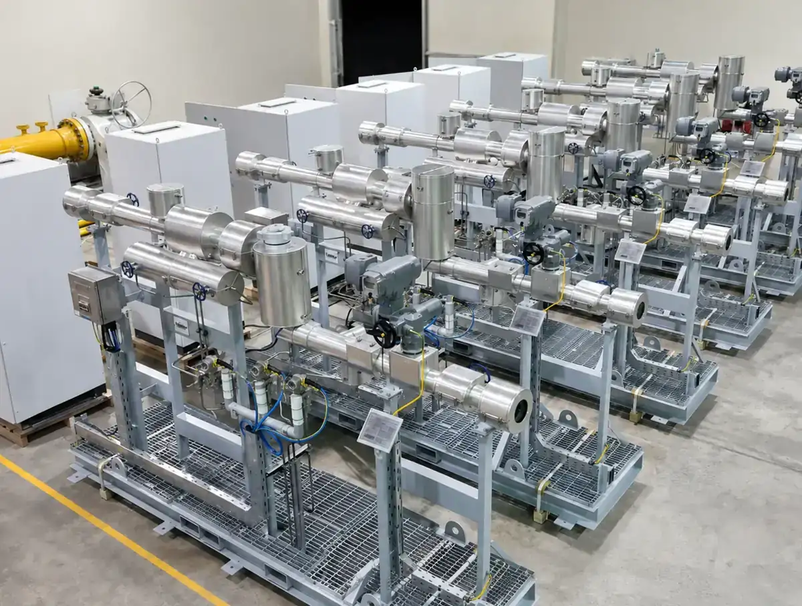

01
Notre façon de travailler · Usines de procédé sur skid
De la faisabilité d’ingénierie à la livraison d’un système intégré.
Pour les usines pilotes et de démonstration et les skids de procédé industriels, nous travaillons en trois phases : ingénierie de base et faisabilité, ingénierie détaillée, et conception et construction intégrées. Confiez-nous une ou plusieurs phases, sans obligation de poursuivre.
Les projets d’automatisation industrielle et PlantON™ suivent leurs propres étapes de livraison, présentées sur ces pages.

01 / Comprendre le besoin
Tout projet d’usine de procédé sur skid commence par l’application.

- Exigences du procédé et d’exploitationObjectifs, matières, conditions d’exploitation, capacité et équipements principaux.
- Étape du projetConcept, pilote, démonstration, ingénierie détaillée ou mise en œuvre industrielle.
- Interfaces techniques et du siteInterfaces des équipements, des instruments, de l’automatisation, des utilités et de l’installation.
- Information d’ingénierie disponibleDocuments de procédé, données d’essai, calculs, plans et spécifications.
- Résultat attenduLes livrables et les décisions que le mandat doit produire.
À partir de là, nous convenons de la bonne phase et de la bonne portée.
Voir l’approche d’ingénierie02 / Capacités et contexte
Les trois phases de mandat
Chaque phase a ses propres objectifs, livrables et critères d’acceptation. Confiez-nous une ou plusieurs phases.
01
01 · Ingénierie de base et faisabilité
Ce qu’il fait
Transforme un résultat de laboratoire, une idée de procédé ou un besoin de mise à niveau en une base d’ingénierie définie et une estimation budgétaire de classe 4, avant que vous vous engagiez dans la conception détaillée ou le matériel.
Idéal lorsque
Le procédé fonctionne à l’échelle du laboratoire ou le besoin se précise encore, et vous avez besoin d’une base budgétaire ou d’une décision de poursuivre ou non pour le prochain investissement.
Décision rendue possible
Passer à l’ingénierie détaillée, poursuivre l’évaluation ou réviser le concept.
Livrables types
- Description du procédé et base de conception et d’exploitation
- Revue des exigences et registre des questions ouvertes
- PFD préliminaire et bilan de matière et d’énergie, lorsque les données de procédé le permettent
- P&ID préliminaire
- Liste préliminaire des équipements et besoins en utilités
- Exigences préliminaires d’instrumentation et d’automatisation
- Évaluation des options de procédé et d’équipements
- Implantation et encombrement préliminaires
- Revue des interfaces, des risques et des enjeux de sécurité
- Articles à long délai et calendrier préliminaire
- Estimation budgétaire de classe 4 (AACE)
- Recommandation pour la prochaine décision
02
02 · Ingénierie détaillée
Ce qu’il fait
Développe la base convenue en un dossier d’ingénierie coordonné, prêt pour l’approvisionnement, chiffré selon une estimation de classe 2.
Idéal lorsque
La base de procédé est arrêtée et vous avez besoin d’un dossier constructible : pour votre propre fabrication, pour un appel d’offres ou pour une phase de construction avec nous.
Résultat
Un dossier prêt pour l’appel d’offres ou la construction. Ensuite : passer à la conception et construction intégrées avec nous, retenir un autre partenaire d’exécution, ou réviser le dossier.
Livrables types
Conception de procédé et mécanique
- PFD et P&ID
- Liste des lignes
- Fiches techniques des équipements
- Implantation du skid, plan d’ensemble et coordination 3D
- Plans de tuyauterie et mécaniques dans la portée convenue
Sélection de l’instrumentation
- Spécifications et fiches techniques des instruments
- Listes des instruments et des vannes
- Liste des E/S
Conception électrique
- Schéma unifilaire
- Liste des charges
- Liste des câbles
- Plan d’ensemble et schémas de câblage des panneaux
Description fonctionnelle et architecture du contrôle
- Philosophie et séquences de contrôle
- Définition des alarmes, des verrouillages et de la matrice causes-effets
- Architecture du système de contrôle et du réseau
Approvisionnement, sécurité et coûts
- Spécifications d’approvisionnement et dossiers de demande de prix
- Plan FAT/SAT et critères d’acceptation, convenus avant l’achat du matériel
- Soutien HAZOP et contribution aux revues de sécurité
- Estimation des coûts de classe 2 (AACE) et dossier de décision convenu
03
03 · Conception et construction intégrées
Ce qu’il fait
Une seule équipe responsable conçoit, approvisionne, fabrique, fournit l’instrumentation et les travaux électriques, programme, intègre et met à l’essai le système prévu au contrat, puis assure un soutien défini sur le site et la remise.
Idéal lorsque
Vous voulez un seul partenaire responsable, des plans jusqu’au système fonctionnel.
Résultat
Un système accepté selon les critères convenus au départ.
Livrables types
Approvisionnement et fabrication
- Approvisionnement, relance et revue des documents des fournisseurs
- Fabrication et assemblage du skid
- Registres d’assurance et de contrôle de la qualité et d’inspection
Instrumentation
- Fourniture et installation des instruments
- Étalonnage et vérification des boucles
Électricité
- Panneaux de commande et de puissance
- Câblage de terrain
Automatisation et données
- Programmation PLC/HMI/SCADA
- Architecture des données, avec connexion PlantON™ en option
Essais, mise en service et remise
- FAT, dont la portée est convenue pour chaque projet
- Surveillance de l’installation, SAT et soutien à la mise en service
- Formation des opérateurs
- Plans tels que construits, manuels d’exploitation et d’entretien, liste des pièces de rechange et remise
Les livrables exacts sont convenus pour chaque mandat. Les estimations de coûts sont classées selon les lignes directrices d’AACE International : classe 4 à l’étape de faisabilité, classe 2 à l’étape d’ingénierie détaillée.
Chaque phase est une portée rémunérée distincte. Vous pouvez arrêter, changer de direction ou retenir un autre partenaire après n’importe quelle phase.
03 / Logique de livraison
De la première conversation à une prochaine étape claire.
- 01Comprendre le projet
- 02Définir la portée, la phase et les livrables
- 03Exécuter et vérifier selon les critères d’acceptation
- 04Décider de la prochaine étape
04 / Sécurité dès la conception
La sécurité est une donnée de conception, pas une correction à la mise en service.
Les systèmes pilotes et de procédé combinent souvent une chimie peu connue, de nouvelles plages d’exploitation et une portée qui évolue sans cesse. Nous gérons ce risque dans les disciplines de procédé, de mécanique, d’électricité et de contrôle dès la première phase.
01
01 · Cerner les dangers tôt
Cerner tôt les dangers du procédé et les écarts plausibles, au moyen de la méthode d’analyse des risques convenue pour le projet.
02
02 · HAZID et HAZOP
Soutenir les revues HAZID et HAZOP, ou d’autres revues formelles, et y participer lorsqu’elles conviennent à la portée et à l’étape.
03
03 · Des mesures de protection intégrées à la conception
Traduire chaque mesure de protection convenue en exigences d’équipements, de décharge et d’évent, d’isolement, d’alarmes, de permissifs et de verrouillages.
04
04 · États d’exploitation sûrs
Définir le démarrage, l’arrêt, la purge et la préparation en toute sécurité, ainsi que le comportement en cas de perte d’utilités, selon les besoins du procédé.
05
05 · Vérifier avant la remise
Vérifier les mesures de protection mises en œuvre lors de la revue de conception, des essais en usine (FAT) et des essais sur site (SAT).
Le soutien HAZOP, les définitions d’alarmes et de verrouillages, les plans FAT et SAT et les procédures de mise en service font partie des livrables de phase ci-dessus, lorsque la portée du projet les prévoit.
05 / Commencez par ce que vous savez
Pour un démarrage efficace
La première discussion est plus utile lorsque l’équipe peut partager sa base existante, ses questions ouvertes et la prochaine décision que le projet doit permettre.
Préparer une demande techniqueInformation utile à préparer
- Objectif scientifique ou d’exploitation et maturité actuelle du projet
- Information de procédé existante, plans et résultats d’essais
- Qui est responsable des équipements, des installations, de la SST et environnement, et des interfaces du site
- Étape budgétaire, date de la prochaine décision et parties prenantes à l’approbation
Grandissons ensemble
Vous planifiez une usine pilote, de démonstration ou un skid de procédé industriel?
Que vous ayez besoin d’une évaluation de faisabilité, d’ingénierie détaillée ou du système intégré, nous pouvons vous aider à définir les exigences et la bonne portée.